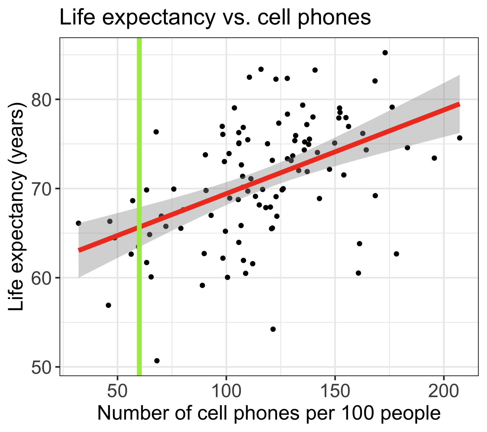
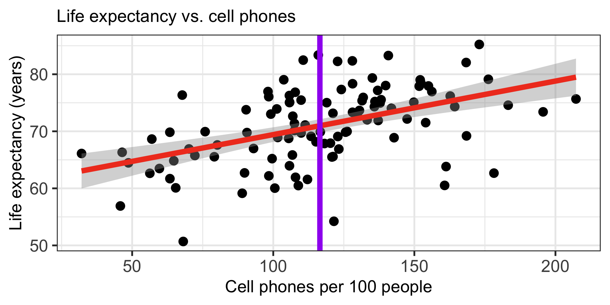

Lesson 4: SLR Inference and Prediction
2026-01-14
Learning Objectives
- Estimate the variance of the residuals
- Using a hypothesis test, determine if there is enough evidence that population slope \(\beta_1\) is not 0 (applies to \(\beta_0\) as well)
- Calculate and report the estimate and confidence interval for the population slope \(\beta_1\) (applies to \(\beta_0\) as well)
- Calculate and report the estimate and confidence interval for the expected/mean response given \(X\)
Process of regression data analysis


Model Selection
Building a model
Selecting variables
Prediction vs interpretation
Comparing potential models
Model Fitting
Find best fit line
Using OLS in this class
Parameter estimation
Categorical covariates
Interactions
Model Evaluation
- Evaluation of model fit
- Testing model assumptions
- Residuals
- Transformations
- Influential points
- Multicollinearity
Model Use (Inference)
- Inference for coefficients
- Hypothesis testing for coefficients
- Inference for expected \(Y\) given \(X\)
- Prediction of new \(Y\) given \(X\)
Let’s remind ourselves of the model that we fit last lesson
We fit Gapminder data with cell phones as our independent variable and life expectancy as our dependent variable
We used OLS to find the coefficient estimates of our best-fit line
| term | estimate | std.error | statistic | p.value |
|---|---|---|---|---|
| (Intercept) | 60.04 | 2.06 | 29.21 | 0.00 |
| cell_phones_100 | 0.09 | 0.02 | 5.55 | 0.00 |

Fitted line is derived from the population SLR model
The (population) regression model is denoted by:
\[Y = \beta_0 + \beta_1X + \epsilon\]
\(\beta_0\) and \(\beta_1\) are unknown population parameters
\(\epsilon\) (epsilon) is the error about the line
It is assumed to be a random variable with a…
Normal distribution with mean 0 and constant variance \(\sigma^2\)
i.e. \(\epsilon \sim N(0, \sigma^2)\)
Poll Everywhere Question 1
Learning Objectives
- Estimate the variance of the residuals
- Using a hypothesis test, determine if there is enough evidence that population slope \(\beta_1\) is not 0 (applies to \(\beta_0\) as well)
- Calculate and report the estimate and confidence interval for the population slope \(\beta_1\) (applies to \(\beta_0\) as well)
- Calculate and report the estimate and confidence interval for the expected/mean response given \(X\)
\(\widehat\sigma^2\): Needed ingredient for inference
- Recall our population model residuals are distributed by \(\epsilon \sim N(0, \sigma^2)\)
- And our estimated residuals are \(\widehat\epsilon \sim N(0, \widehat\sigma^2)\)
- Hence, the variance of the errors (residuals) is estimated by \(\widehat{\sigma}^2\)
\[\widehat{\sigma}^2 = S_{y|x}^2= \frac{1}{n-2}\sum_{i=1}^n (Y_i - \widehat{Y}_i)^2 =\frac{1}{n-2}SSE = MSE\]
\(\widehat\sigma^2\): I hope R can calculate that for me… (1/2)
The standard deviation \(\widehat{\sigma}\) is given in the R output as the
Residual standard error- \(4^{th}\) line from the bottom in the
summary()output of the model:
- \(4^{th}\) line from the bottom in the
Call:
lm(formula = life_exp ~ cell_phones_100, data = .)
Residuals:
Min 1Q Median 3Q Max
-17.211 -3.268 0.615 3.818 12.449
Coefficients:
Estimate Std. Error t value Pr(>|t|)
(Intercept) 60.04051 2.05567 29.207 < 2e-16 ***
cell_phones_100 0.09384 0.01692 5.546 2.27e-07 ***
---
Signif. codes: 0 '***' 0.001 '**' 0.01 '*' 0.05 '.' 0.1 ' ' 1
Residual standard error: 5.964 on 103 degrees of freedom
Multiple R-squared: 0.23, Adjusted R-squared: 0.2225
F-statistic: 30.76 on 1 and 103 DF, p-value: 2.271e-07\(\widehat\sigma^2\): I hope R can calculate that for me… (2/2)
- It can!!
\(\widehat\sigma^2\) to SSE
- Recall how we minimized the SSE to find our line of best fit
- SSE and \(\widehat\sigma^2\) are closely related:
\[\begin{aligned} \widehat{\sigma}^2 & = \frac{1}{n-2}SSE\\ 6.142^2 & = \frac{1}{80-2}SSE\\ SSE & = 103 \cdot 6.142^2 = 2942.48 \end{aligned}\]
- 2942.48 is the smallest sums of squares of all possible regression lines through the data
Learning Objectives
- Estimate the variance of the residuals
Using a hypothesis test, determine if there is enough evidence that population slope \(\beta_1\) is not 0 (applies to \(\beta_0\) as well)
Calculate and report the estimate and confidence interval for the population slope \(\beta_1\) (applies to \(\beta_0\) as well)
- Calculate and report the estimate and confidence interval for the expected/mean response given \(X\)
Do we trust our estimate \(\widehat\beta_1\)?
- So far, we have shown that we think the estimate is 0.094
- \(\widehat\beta_1\) (coefficient estimate) uses our sample data to estimate the population parameter \(\beta_1\)
- Inference helps us figure out mathematically how much we trust our best-fit line
- Are we certain that the relationship between \(X\) and \(Y\) that we estimated reflects the true, underlying relationship?
Poll Everywhere Question 2
Inference for the population slope: hypothesis test and CI
Population model
line + random “noise”
\[Y = \beta_0 + \beta_1 \cdot X + \varepsilon\] with \(\varepsilon \sim N(0,\sigma^2)\)
\(\sigma^2\) is the variance of the residuals
Sample best-fit (least-squares) line
\[\widehat{Y} = \widehat{\beta}_0 + \widehat{\beta}_1 \cdot X \]
Note: Some sources use \(b\) instead of \(\widehat{\beta}\)
We have two options for inference:
- Conduct the hypothesis test
Note: R reports p-values for 2-sided tests
- Construct a 95% confidence interval for the population slope \(\beta_1\)
Learning Objectives
- Estimate the variance of the residuals
- Using a hypothesis test, determine if there is enough evidence that population slope \(\beta_1\) is not 0 (applies to \(\beta_0\) as well)
- Calculate and report the estimate and confidence interval for the population slope \(\beta_1\) (applies to \(\beta_0\) as well)
- Calculate and report the estimate and confidence interval for the expected/mean response given \(X\)
Reference: Steps in a Hypothesis Test
Check the assumptions
- What sampling distribution are you using? What assumptions are required for it?
Set the level of significance \(\alpha\)
Specify the null ( \(H_0\) ) and alternative ( \(H_A\) ) hypotheses
- In symbols and/or in words
- Alternative: one- or two-sided?
Specify the test statistic and its distribution under the null
Calculate the test statistic.
Calculate the p-value based on the observed test statistic and its sampling distribution
Write a conclusion to the hypothesis test
- Do we reject or fail to reject \(H_0\)?
- Write a conclusion in the context of the problem
Steps for hypothesis test for population slope \(\beta_1\) (using t-test)
Check the assumptions
Set the level of significance
- Often we use \(\alpha = 0.05\)
Specify the null ( \(H_0\) ) and alternative ( \(H_A\) ) hypotheses
- Often, we are curious if the coefficient is 0 or not:
Specify the test statistic and its distribution under the null
- The test statistic is \(t\), and follows a Student’s t-distribution.
Calculate the test statistic.
- The calculated test statistic for \(\widehat\beta_1\) is \[t = \frac{ \widehat\beta_1 - \beta_1}{ \text{SE}_{\widehat\beta_1}} = \frac{ \widehat\beta_1}{ \text{SE}_{\widehat\beta_1}}\] when we assume \(H_0: \beta_1 = 0\) is true.
Calculate the p-value
- We are generally calculating: \(2\cdot P(T > t)\)
Write a conclusion
- We (reject/fail to reject) the null hypothesis that the slope is 0 at the \(100\alpha\%\) significiance level. There is (sufficient/insufficient) evidence that there is significant association between (\(Y\)) and (\(X\)) (p-value = \(P(T > t)\)).
Standard error of fitted slope \(\widehat\beta_1\)
\[\text{SE}_{\widehat\beta_1} = \frac{s_{\textrm{residuals}}}{s_x\sqrt{n-1}}\]
\(\text{SE}_{\widehat\beta_1}\) is the variability of the statistic \(\widehat\beta_1\)
- \(s_{\textrm{residuals}}^2\) is the sd of the residuals
- \(s_x\) is the sample sd of the explanatory variable \(x\)
- \(n\) is the sample size, or the number of (complete) pairs of points
Calculating standard error for \(\widehat\beta_1\) (1/2)
- Option 1: Calculate using the formula
# A tibble: 1 × 12
r.squared adj.r.squared sigma statistic p.value df logLik AIC BIC
<dbl> <dbl> <dbl> <dbl> <dbl> <dbl> <dbl> <dbl> <dbl>
1 0.230 0.222 5.96 30.8 0.000000227 1 -335. 677. 685.
# ℹ 3 more variables: deviance <dbl>, df.residual <int>, nobs <int>[1] 5.964089[1] 34.56469[1] 105[1] 0.01691978Calculating standard error for \(\widehat\beta_1\) (2/2)
- Option 2: Use regression table
Some important notes
- Today we are discussing the hypothesis test for a single coefficient
The test statistic for a single coefficient follows a Student’s t-distribution
- It can also follow an F-distribution, but we will discuss this more with multiple linear regression and multi-level categorical covariates
Single coefficient testing can be done on any coefficient, but it is most useful for continuous covariates or binary covariates
- This is because testing the single coefficient will still tell us something about the overall relationship between the covariate and the outcome
- We will talk more about this with multiple linear regression and multi-level categorical covariates
Poll Everywhere Question 3
Life expectancy example: hypothesis test for population slope \(\beta_1\) (1/4)
- Steps 1-4 are setting up our hypothesis test: not much change from the general steps
Check the assumptions: We have met the underlying assumptions (checked in our Model Evaluation step)
Set the level of significance
- Often we use \(\alpha = 0.05\)
Specify the null ( \(H_0\) ) and alternative ( \(H_A\) ) hypotheses
- We are testing if the slope is 0 or not:
Specify the test statistic and its distribution under the null
- The test statistic is \(t\), and follows a Student’s t-distribution.
Life expectancy example: hypothesis test for population slope \(\beta_1\) (2/4)
5.Calculate the test statistic
Option 1: Calculate the test statistic using the values in the regression table
| term | estimate | std.error | statistic | p.value |
|---|---|---|---|---|
| cell_phones_100 | 0.094 | 0.017 | 5.546 | 0.000 |
[1] 5.546063Life expectancy example: hypothesis test for population slope \(\beta_1\) (3/4)
6.Calculate the p-value
The \(p\)-value is the probability of obtaining a test statistic just as extreme or more extreme than the observed test statistic assuming the null hypothesis \(H_0\) is true
We know the probability distribution of the test statistic (the null distribution) assuming \(H_0\) is true
Statistical theory tells us that the test statistic \(t\) can be modeled by a \(t\)-distribution with \(df = n-2\).
- We had 105 countries’ data, so \(n=`n`\)
Option 1: Use pt() and our calculated test statistic
Life expectancy example: hypothesis test for population slope \(\beta_1\) (4/4)
- Write a conclusion
We reject the null hypothesis that the slope is 0 at the \(5\%\) significance level. There is sufficient evidence that there is significant association between life expectancy and number of cell phones per 100 people (p-value < 0.0001).
Note on hypothesis testing using R
- We can basically combine Step 5 and 6 if we are using the “Option 2” route
In our assignments: if you use Option 2, Step 5and 6 become one
- Unless I specifically ask for the test statistic!!
Life expectancy ex: hypothesis test for population intercept \(\beta_0\) (1/4)
Check the assumptions: We have met the underlying assumptions (checked in our Model Evaluation step)
Set the level of significance
- Often we use \(\alpha = 0.05\)
Specify the null ( \(H_0\) ) and alternative ( \(H_A\) ) hypotheses
- We are testing if the intercept is 0 or not:
Specify the test statistic and its distribution under the null
- This is the same as the slope. The test statistic is \(t\), and follows a Student’s t-distribution.
Life expectancy ex: hypothesis test for population intercept \(\beta_0\) (2/4)
5.Calculate the test statistic
Option 1: Calculate the test statistic using the values in the regression table
Life expectancy ex: hypothesis test for population intercept \(\beta_0\) (3/4)
6.Calculate the p-value
Option 1: Use pt() and our calculated test statistic
Life expectancy ex: hypothesis test for population intercept \(\beta_0\) (4/4)
- Write a conclusion
We reject the null hypothesis that the intercept is 0 at the \(5\%\) significance level. There is sufficient evidence that the intercept for the association between life expectancy and number of cell phones per 100 people is different from 0 (p-value < 0.0001).
- Note: if we fail to reject \(H_0\), then we could decide to remove the intercept from the model to force the regression line to go through the origin (0,0) if it makes sense to do so for the application
- Not typical to remove the intercept
Learning Objectives
- Estimate the variance of the residuals
- Using a hypothesis test, determine if there is enough evidence that population slope \(\beta_1\) is not 0 (applies to \(\beta_0\) as well)
- Calculate and report the estimate and confidence interval for the population slope \(\beta_1\) (applies to \(\beta_0\) as well)
- Calculate and report the estimate and confidence interval for the expected/mean response given \(X\)
Inference for the population slope: hypothesis test and CI
Population model
line + random “noise”
\[Y = \beta_0 + \beta_1 \cdot X + \varepsilon\] with \(\varepsilon \sim N(0,\sigma^2)\)
\(\sigma^2\) is the variance of the residuals
Sample best-fit (least-squares) line
\[\widehat{Y} = \widehat{\beta}_0 + \widehat{\beta}_1 \cdot X \]
Note: Some sources use \(b\) instead of \(\widehat{\beta}\)
We have two options for inference:
- Conduct the hypothesis test
Note: R reports p-values for 2-sided tests
- Construct a 95% confidence interval for the population slope \(\beta_1\)
Confidence interval for population slope \(\beta_1\)
Recall the general CI formula:
\[\widehat{\beta}_1 \pm t_{\alpha, n-2}^* \cdot SE_{\widehat{\beta}_1}\]
To construct the confidence interval, we need to:
Set our \(\alpha\)-level
Find \(\widehat\beta_1\)
Calculate the \(t_{n-2}^*\)
Calculate \(SE_{\widehat{\beta}_1}\)
Calculate CI for population slope \(\beta_1\) (1/2)
\[\widehat{\beta}_1 \pm t^*\cdot SE_{\beta_1}\]
where \(t^*\) is the \(t\)-distribution critical value with \(df = n -2\).
- Option 1: Calculate using each value
Save values needed for CI:
Use formula to calculate each bound
Calculate CI for population slope \(\beta_1\) (2/2)
\[\widehat{\beta}_1 \pm t^*\cdot SE_{\beta_1}\]
where \(t^*\) is the \(t\)-distribution critical value with \(df = n -2\).
- Option 2: Use the regression table
Interpreting the coefficient estimate of the population slope with CIs
When we report our results to someone else, we don’t usually show them our full hypothesis test
- In an informal setting, someone may want to see it
Typically, we report the estimate with the confidence interval
- From the confidence interval, your audience can also deduce the results of a hypothesis test
Once we found our CI, we often just write the interpretation of the coefficient estimate:
General statement for population slope inference
For every increase of 1 unit in the \(X\)-variable, there is an expected/average (pick one) increase of \(\widehat\beta_1\) units in the \(Y\)-variable (95%: LB, UB).
- In our example: For every additional cell phone per 100 people, life expectancy increases, on average, 0.094 years (95% CI: 0.06, 0.127)
Usually three options for your interpretations
- Option 1: For every additional cell phone per 100 people, life expectancy increases, on average, 0.094 years (95% CI: 0.06, 0.127)
- Option 2: For every additional cell phone per 100 people, average life expectancy increases 0.094 years (95% CI: 0.06, 0.127)
- Option 3: For every additional cell phone per 100 people, expected life expectancy increases 0.094 years (95% CI: 0.06, 0.127)
Poll Everywhere Question 4
For reference: quick CI for \(\beta_0\)
- Calculate CI for population intercept \(\beta_0\): \(\widehat{\beta}_0 \pm t^*\cdot SE_{\beta_0}\)
where \(t^*\) is the \(t\)-distribution critical value with \(df = n -2\)
- Use the regression table
| term | estimate | std.error | statistic | p.value | conf.low | conf.high |
|---|---|---|---|---|---|---|
| (Intercept) | 60.041 | 2.056 | 29.207 | 0.000 | 55.964 | 64.117 |
| cell_phones_100 | 0.094 | 0.017 | 5.546 | 0.000 | 0.060 | 0.127 |
General statement for population intercept inference
The expected outcome for the \(Y\)-variable is (\(\widehat\beta_0\)) when the \(X\)-variable is 0 (95% CI: LB, UB).
- For example: The average life expectancy is 60.04 years when the number of cell phones per person is 0 (95% CI: 55.96, 64.12).
Learning Objectives
- Estimate the variance of the residuals
- Using a hypothesis test, determine if there is enough evidence that population slope \(\beta_1\) is not 0 (applies to \(\beta_0\) as well)
- Calculate and report the estimate and confidence interval for the population slope \(\beta_1\) (applies to \(\beta_0\) as well)
- Calculate and report the estimate and confidence interval for the expected/mean response given \(X\)
Finding a mean response given a value of our independent variable
| term | estimate | std.error | statistic | p.value |
|---|---|---|---|---|
| (Intercept) | 60.041 | 2.056 | 29.207 | 0.000 |
| cell_phones_100 | 0.094 | 0.017 | 5.546 | 0.000 |
\[\widehat{\textrm{life expectancy}} = 60.041 + 0.094 \cdot \textrm{cell phones} \]
- What is the expected/predicted life expectancy for any country with 60 cell phones per 100 people?
\[\widehat{\textrm{life expectancy}} = 60.041 + 0.094 \cdot 60 = 65.671\]
How do we interpret the expected value?
- We sometimes call this “predicted” value, since we can technically use a number (of cell phones) that is not in our sample
How variable is it?
Mean response/prediction with regression line
Recall the population model:
line + random “noise”
\[Y = \beta_0 + \beta_1 \cdot X + \varepsilon\] with \(\varepsilon \sim N(0,\sigma^2)\)
- When we take the expected value, at a given value \(X^*\), the average expected response at \(X^*\) is:
\[\widehat{E}[Y|X^*] = \widehat\beta_0 + \widehat\beta_1 X^*\]

- These are the points on the regression line
- The mean responses have variability, and we can calculate a CI for it, for every value of \(X^*\)
CI for population mean response (\(\widehat{E}[Y|X^*]\) or \(\mu_{Y|X^*})\)
\[\widehat{E}[Y|X^*] \pm t_{n-2}^* \cdot SE_{\widehat{E}[Y|X^*]}\]
\[SE_{\widehat{E}[Y|X^*]} = s_{\text{residuals}} \sqrt{\frac{1}{n} + \frac{(X^* - \overline{X})^2}{(n-1)s_X^2}}\]
- \(\widehat{E}[Y|X^*]\) is the predicted value at the specified point \(X^*\) of the explanatory variable
- \(s_{\textrm{residuals}}^2\) is the sd of the residuals
- \(n\) is the sample size, or the number of (complete) pairs of points
- \(\overline{X}\) is the sample mean of the explanatory variable \(x\)
- \(s_X\) is the sample sd of the explanatory variable \(X\)
- Recall that \(t_{n-2}^*\) is calculated using
qt()and depends on the confidence level (\(1-\alpha\))
Example Option 1: CI for mean response \(\mu_{Y|X^*}\)
Find the 95% CI’s for mean life expectancy for 60 cell phones per 100 people:
\[\begin{align} \widehat{E}[Y|X^*] &\pm t_{n-2}^* \cdot SE_{\widehat{E}[Y|X^*]}\\ 65.671 &\pm 1.983 \cdot s_{residuals} \sqrt{\frac{1}{n} + \frac{(X^* - \bar{x})^2}{(n-1)s_x^2}}\\ 65.671 &\pm 1.983 \cdot 5.964 \sqrt{\frac{1}{105} + \frac{(60 - 116.523)^2}{(105-1)34.565^2}}\\ 65.671 &\pm 1.983 \cdot 1.12\\ 65.671 &\pm 2.22\\ (63.45 &, 67.891) \end{align}\]Example Option 2: CI for mean response \(\mu_{Y|X^*}\)
Find the 95% CI’s for mean life expectancy for 60 and 80 cell phones per 100 people, respectively.
- Use the base R
predict()function - Requires specification of a
newdata“value”- The
newdatavalue is \(X^*\) - This has to be in the format of a data frame though
- with column name identical to the predictor variable in the model
- The
Poll Everywhere Question 5
Confidence bands for mean response \(\mu_{Y|X^*}\)
- Often we plot the CI for many values of X, creating confidence bands
- The confidence bands are what ggplot creates when we set
se = TRUEwithingeom_smooth - Think about it: for what values of X are the confidence bands (intervals) narrowest?
Width of confidence bands for mean response \(\mu_{Y|X^*}\)
- For what values of \(X^*\) are the confidence bands (intervals) narrowest? widest?

Textbook readings
Lesson 4: SLR 2